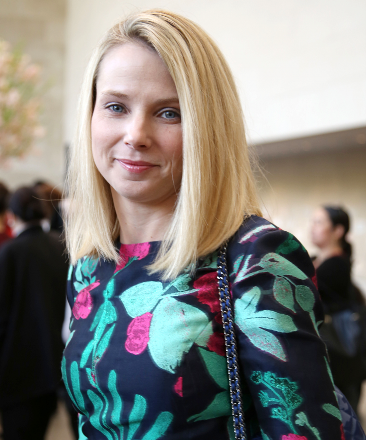
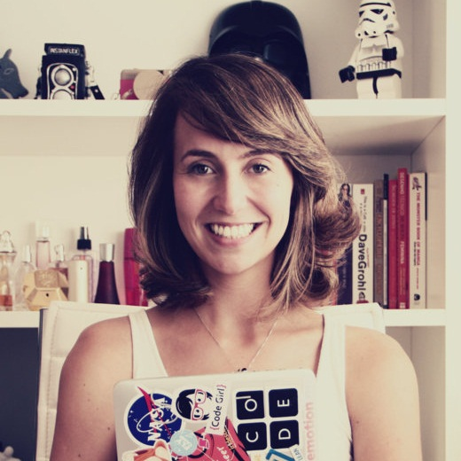

Marissa Mayer
Marissa Mayer foi a primeira engenheira do Google. Seu trabalho no Google Maps, Google Books, Google Images e Gmail ajudou a construir a empresa que se tornou a número 1 de pesquisa no mundo.
A cientista da Comptação que formou - se com honras na Universidade de Stanford, promeveu mudanças radicais em vários produtos do Yahoo! ao se tornar CEO da empresa, além de investir no desenvolvimento de um novo visual para o Flickr, fazendo com que nos 12 primeiros meses comprasse mais de 30 startups, levantando a empresa e ganhando espaço novamente.
Tara Chklovski
Tudo começou quando Marissa Mayer foi para os Estados Unidos com vinte e poucos anos, e notou que as mulheres não tinham incentivo à ciência e tecnólogia como ela recebeu em sua infância na Índia, em que meninos e meninas eram incetivados igualmente.
Dessa forma ela decidiu iniciar o Iridescent, uma organização sem fins lucrativos, com a missão de levar a STEM (ciência, tecnologia, engenharia e matemática) para os colegiais e incentivar mulheres engenheiras, cientistas e de outros cargos da tecnologia a serem mentoras. O programa tem ganhado força nos EUA, e vem ampliando seu escopo para países ao redor do mundo.

Camila Acchuti
Sócia-fundadora da Ponte21, consultoria de inovação e tecnologia. Única mulher a se formar na sua turma de Ciência de Computação da USP, que a motivou a criar o blog Mulheres na Computação, mostrando como é ser mulher num universo (até então) masculino. O blog foi um sucesso e lhe rendeu um estágio de três meses no Google, na Califórnia. Além da sua consultoria, Camila é embaixadora da Technovation Challenge Brasil, para incentivar a presença feminina na tecnologia e no empreendedorismo.

Estela M. Batista
Estudante de Ciência da Computação na UFV, sempre se interessou pela área tecnológica, o que a fez trocar o curso de Licenciatura em Matematica pelo curso de Ciência da Computação. Aluna dedicada e apaixonada por aplicações matemáticas, o que à leva a ser dedicada em pesquisas no ramo de Análise de Dados, além de ser a fundadora do "History Of Coder Girls".